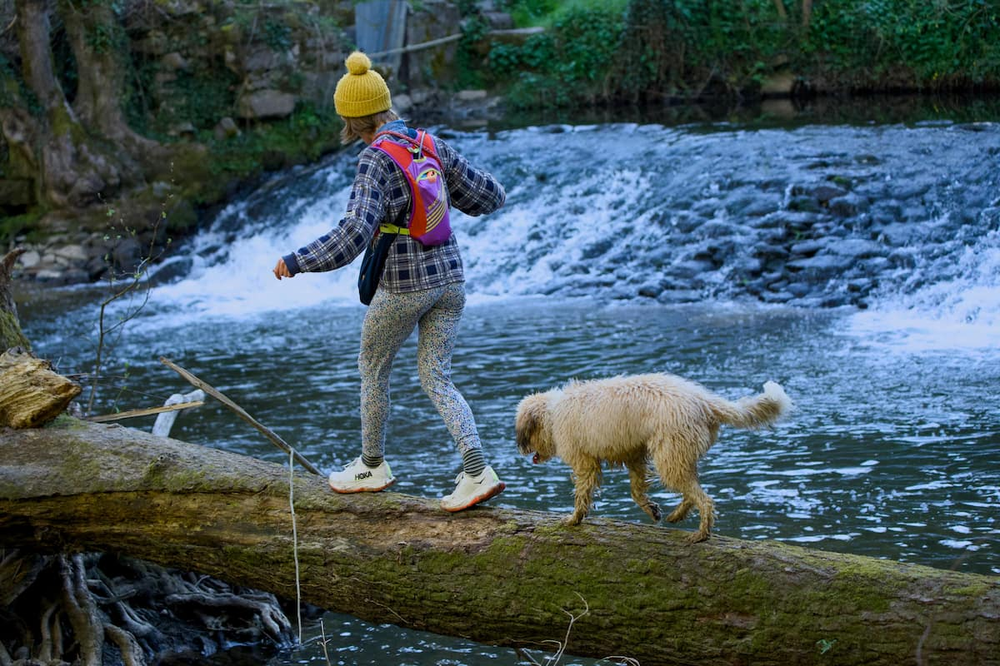

LE BLOG

15 juillet 2026
Les promenades canines avec Dardidog lors des fortes chaleurs
Hydratation, horaires adaptés... Comment sont organisées les sorties pour pallier les risques liés à la chaleur.
Lire l'article →
02 juin 2026
Mes spots préférés pour promener les chiens dans l'Ouest Lyonnais
Découvrez mes lieux favoris pour des balades canines réussies.
Lire l'article →
08 mai 2026
Foire aux questions
Pré-visite, remise des clefs, annulation, règlement… Retrouvez les réponses à toutes à vos questions.
Lire l'article →